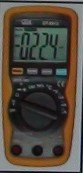

Chapter 02 – IT Essentials
1. Which two devices commonly affect wireless LAN ? (Choose two.)
- Blu-ray players;
- Home theaters;
- Wirelles phones;
- Microwaves;
- Incandescent light bulbs;
- External hard drive.
2. A technician has a room of computers wich are running very hot. The technician discovers that the heat sinks in the computers are very dusty. What should the technician use to clean the heat sinks ?
- Mild cleaning solution;
- Lint free cloth;
- Isoprpyl alcohol;
- Compressed air.
3. Which computer components must a technician never try to work on when wearing an antistatic wrist strap ?
- CPU;
- Hard disk;
- Keyboard;
- CRT monitor;
- RAM module.
4.  Refer to the exhibit. Wich type of tool is shown in the grafic ?
- Cable meter;
- Digital multimeter;
- Network traffic monitor;
- Electrostatic discharger.
5. How does a technician discharge static buildup ?
- Touching the painted part of the computer case;
- Touching an unpainted part of the computer case;
- Touching an antistatic wrist strap before touching any computer equipment;
- Touching an antistatic mai before touching any computer equipment.
6. Refer to exhibit. Which type of tool is presented in the graphic ?
- Hex screwdriver;
- Stripped screwdriver ;
- Philips-head screwdriver;
- Flat-head screwdriver.
7. Which step should be performed first when servicing computer equipment ?
- Wipe down the exterior with a lint free, damp soft cloth.
- Open the case and chek for any loose connections.
- Turn off and remove the power source.
- Replace any suspected bad components with known good components.
8. Wich condition refers to a sudden and dramatic increase in voltage, which is usualy caused by lighting ?
- Brownout;
- Sag;
- Spike;
- Surge.
9. Which Windows XP command-line scans the critical files of the operating system and replaces any files that have been corrupted ?
- Chkdsk;
- Defrag;
- Disk Cleanup;
- Disk Management;
- Scan System;
- System File Checker.
10. The performance of a computer is reduced after if has been using the Internet. Wich three tools could be run to try to improve the performance of the computer ? (Choose three.)
- Fdisk;
- Spyware Remover;
- Defrag;
- Disk Cleanup;
- A Bios updater;
- Device Manager Utility.
11. Why is documentation of all services and repairs an important organizational tool for a tecnician ?
- It allows for public sharing on the Internet;
- It increases the cost of services and repairs;
- It minimizes the requirements that are used when hiring new technicians;
- It provides reference material for similar problems when such problems are encounterd in the future.
12. Why should an antistatic wrist strap be worn when working on electronic equipment ?
- To prevent interference from clothing and loose jewelry;
- To equalize the electrical charge between a person and the equipment;
- To prevent clothing made of silk, polyester, or wool from generating a static charge;
- To draw static electricity away from a component and transfer it safetely from equipment to a grounding point.
13. Which precaution should be taken when working around electronic devices?
- Avoid using magnetized tools;
- Only use hard tools from the same vendor;
- Wear ESD protection to repair monitors in humid environments;
- Avoid using ESD wrist straps and ESD mats simultaneously.
14. Which tool in Windows XP gives a technician access to initialize disks and create partitions ?
- Defrag;
- Disk Cleanup;
- Disk Management;
- Format;
- Scandisk.
15. What are two significant sources of EMI ? (Choose two)
- Infrared mice;
- RAM modules;
- Electrical storms;
- LCD monitors;
- Power lines.
16. Which two tools are recommended for cleaning a PC ? (Choose two)
- Antibacterial spray;
- Compressed air;
- Mild abrasive detergent;
- Nylon brush;
- Rubbing alcohol;
- Soft cloth.
17. Which tool should be used if a user needs to optimize space on a hard drive?
- Defrag;
- Disk Management;
- Fdisk;
- Format.
18. Which two types of tool can help protect a computer from malicious attacks? (Choose two)
- Antivirus software;
- Disk Cleanup;
- Disk Management;
- Fdisk;
- Scandisk;
- Spyware Remover.
1. Which three computer components contain hazardous materials and require special handing for disposal ? (Choose three)
- Batteries;
- Floppy drives;
- Monitors;
- Optical drives;
- Paralel cables;
- Printer toner cartridges.
2. Which two tools can help protect against ESD ? (Choose two)

{kind=link}
{kind=link}
All of these have helped me considerably… A lot of the “why” was answered for me as I examined the test. Thank you all so much, for your assistance in getting me prepared.
thank you so much for these exam questions and answers. They really direct and guide me on the most necessary and important factors of this chapter. Thank you
Are you sure that Nr. 9 isn´t chkdsk ??? It is a cmd-line command, what the System file checker isn´t!